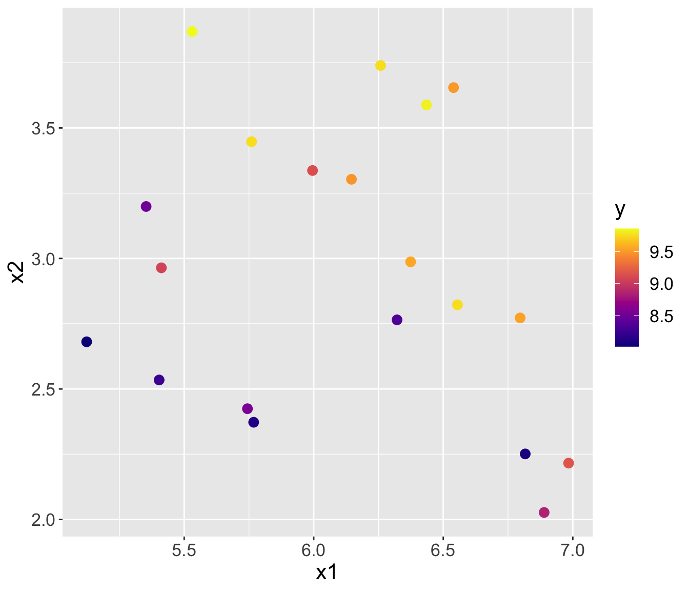
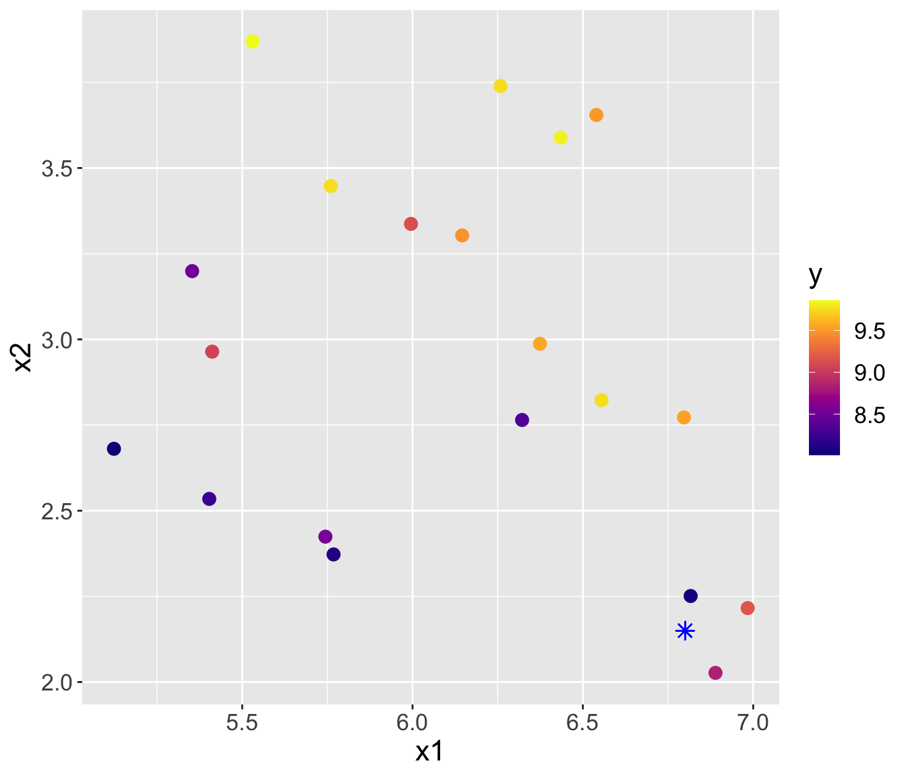
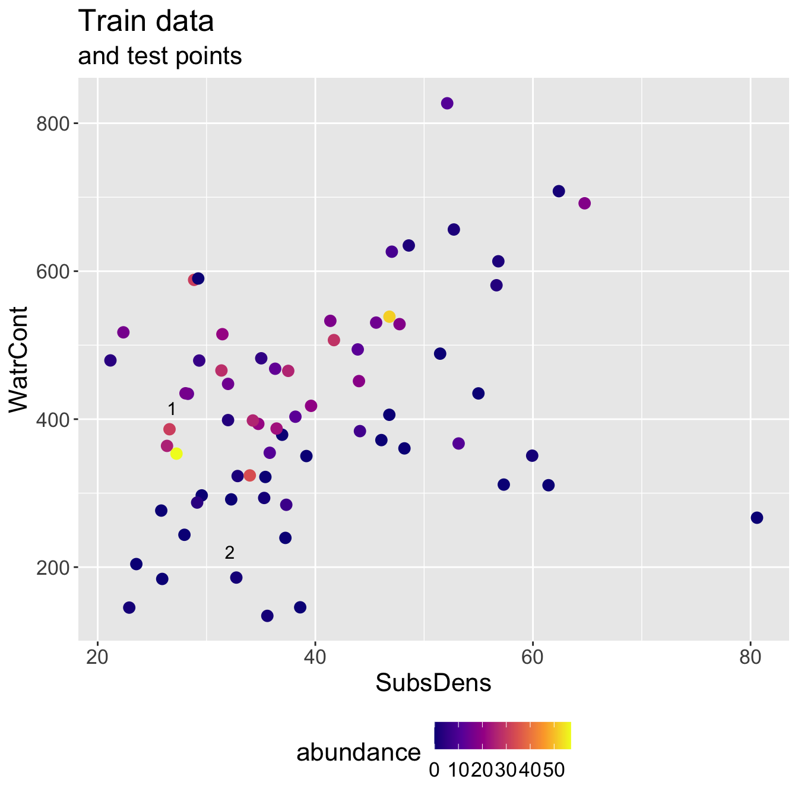
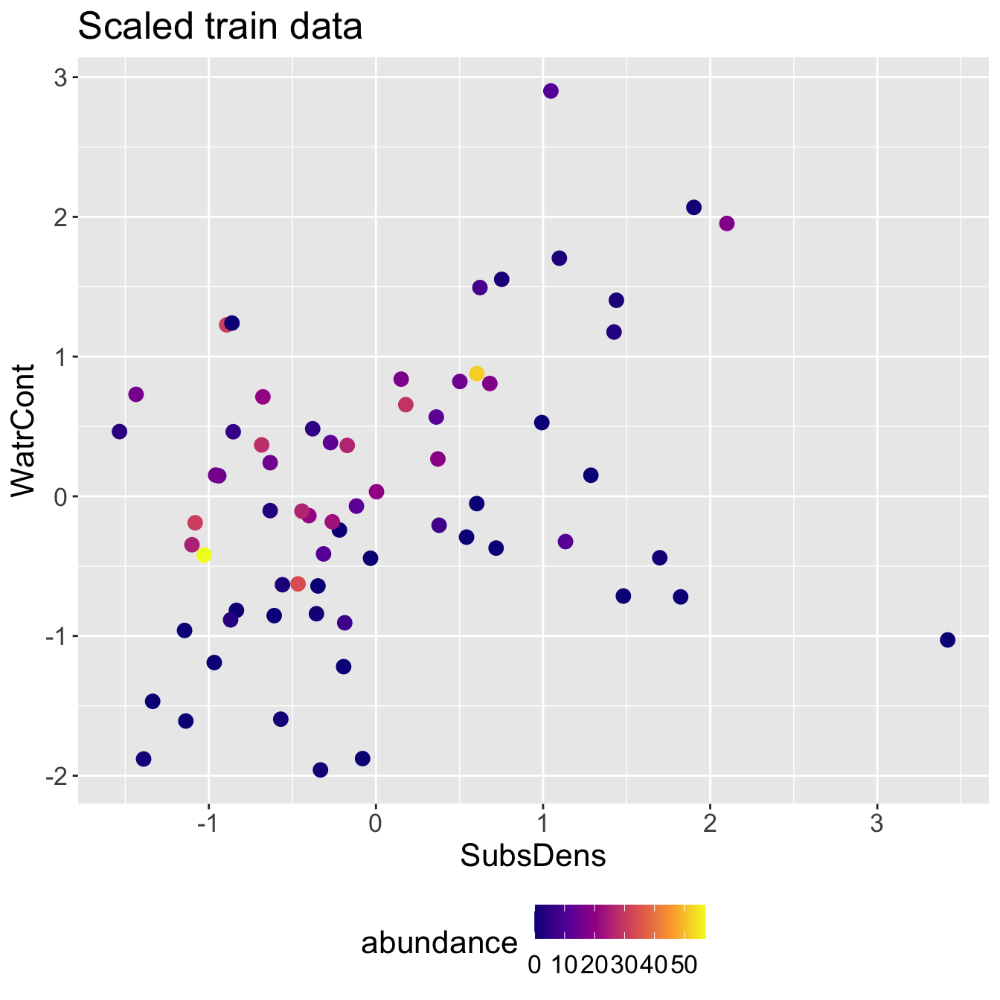

KNN Regression
2/28/23
Housekeeping
Lab 02 due Thursday to Canvas at 11:59pm
Office hours today from 3-4pm
TA: Doug Rosin
- Office hours Sundays 7-9pm upstairs
K-nearest neighbors
(Warning: there will be a lot of \(K\)’s in this course!)
K-nearest neighbors
K-nearest neighbors (KNN) is a nonparametric supervised learning method
Intuitive and simple
Relies on the assumption: observations with similar predictors will have similar responses
Works for both regression and classification (we will start with regression)
Algorithm (in words)
Choose a positive integer \(K\), and have your data split into a train set and test set
For a given test observation with predictor \(x_{0}\):
Identify the \(K\) points in the train data that are closest (in predictor space) to \(x_{0}\). Call this set of neighbors \(\mathcal{N}_{0}\).
Predict \(\hat{y}_{0}\) to be the average of the responses in the neighbor set, i.e. \[\hat{y}_{0} = \frac{1}{K} \sum_{i \in \mathcal{N}_{0}} y_{i}\]
Example
On the next slide, you will see plot with a bunch of colored points
Each point is plotted in predictor space \((x1, x2)\), and is colored according to the value of its response \(y\)
I have a new point (\(\color{blue}{*}\)) and its covariates/predictors, but I need to make a prediction for its response
Example (cont.)


- Using \(K= 3\), predicted \(\hat{y}_{0} = \frac{1}{3}(8.073 + 8.838 + 9.17) = 8.694\)
- Using \(K= 4\), predicted \(\hat{y}_{0} = \frac{1}{4}(8.073 + 8.838 + 9.17 + 9.541) = 8.906\)
Considerations
How do we determine who the neighbors \(\mathcal{N}_{0}\) should be? On the previous slide, it may have seemed intuitive.
- i.e. how do we quantify “closeness”?
Which \(K\) should we use?
Consideration 1: Closeness
- We will quantify closeness using distance metrics
Euclidean distance
One of the most common ways to measure distance between points is with Euclidean distance
On a number line (one-dimension), the distance between two points \(a\) and \(b\) is simply the absolute value of their difference
- Let \(d(a,b)\) denote the Euclidean distance between \(a\) and $b$. Then in 1-D, \(d(a,b) = |a-b|\).
In 2-D (think lon-lat coordinate system), the two points are \(\mathbf{a} = (a_{1}, a_{2})\) and \(\mathbf{b} = (b_{1}, b_{2})\) with Euclidean distance \[d(\mathbf{a}, \mathbf{b}) = \sqrt{(a_{1} - b_{1}) ^2 + (a_{2} - b_{2})^2}\]
Important: the “two-dimensions” refers to the number of coordinates in each point, not the fact that we are calculating a distance between two points
Euclidean distance (cont.)
Generalizing to \(p\) dimensions: if \(\mathbf{a} = (a_{1}, a_{2}, \ldots, a_{p})\) and \(\mathbf{b} = (b_{1}, b_{2}, \ldots, b_{p})\), then \[d(\mathbf{a}, \mathbf{b}) = \sqrt{(a_{1} - b_{1}) ^2 + (a_{2} - b_{2})^2 + \ldots (a_{p} - b_{p})^2} = \sqrt{\sum_{j=1}^{p}(a_{j} - b_{j})^2}\]
E.g. let \(\mathbf{a} = (1, 0, 3)\) and \(\mathbf{b} = (-1, 2, 2)\). What is \(d(\mathbf{a}, \mathbf{b})\)?
Euclidean distance
Another common distance metric is Manhattan distance
- Named after the grid-system of Manhattan’s roads
The Manhattan distance between two points \(\mathbf{a}\) and \(\mathbf{b}\) in \(p\)-dimensions is \[d_{m}(\mathbf{a}, \mathbf{b}) = |a_{1} - b_{1}| + |a_{2} - b_{2}| + \ldots +|a_{p} - b_{p}| = \sum_{j=1}^{p} |a_{j} - b_{j}|\]
E.g. let \(\mathbf{a} = (1, 0, 3)\) and \(\mathbf{b} = (-1, 2, 2)\). What is \(d_{m}(\mathbf{a}, \mathbf{b})\)?
Distance in KNN
We want to find the closest neighbor(s) in the train set to a given test point \(\mathbf{x}_{0}\), such that we can make a prediction \(\hat{y}_{0}\).
Important: what would the points \(\mathbf{a}\) and \(\mathbf{b}\) be in KNN?
Practice
X1 X2 X3 y
1 1 1 -1 0
2 2 0 0 2
3 -1 1 0 4
4 0 1 0 6Suppose I have the above data, and I want to predict for a new test point
x0withX1 = 0, X2 = 0, X3 = 0.Calculate the distance between
x0and each of the observed data points using:Euclidean distance
Manhattan distance
Consideration 2: K
How much does K matter?
It can matter a lot!
As we saw previously, you will get different predicted \(\hat{y}_{0}\) for different choices of \(K\) in KNN regression
Discuss:
What does \(K=1\) mean? Do you think \(K = 1\) is a good choice?
It is better to choose a small \(K\) or big \(K\)?
Example: mite data
Mite data: preparation
The following code divides my data into train and test sets.
Make sure you understand what each line of code is doing! If you don’t, please ask!
set.seed(6)
n <- nrow(mite_dat)
test_ids <- sample(1:n, 2)
train_x <- mite_dat[-test_ids, c("SubsDens", "WatrCont")]
train_y <- mite_dat$abundance[-test_ids]
test_x <- mite_dat[test_ids, c("SubsDens", "WatrCont")]
test_y <- mite_dat$abundance[test_ids]
head(train_x) SubsDens WatrCont
1 39.18 350.15
2 54.99 434.81
3 46.07 371.72
4 48.19 360.50
5 23.55 204.13
6 57.32 311.55Mite data: KNN

Mite data: KNN results
- Running KNN with \(K = 3\) and using Euclidean distance, I identify the following neighbor sets for each test point:
- Predicted abundance \(\hat{y}\) and true abundance \(y\) for both test points, for a test RMSE of 9.428.
# A tibble: 2 × 3
test_pt y_hat y_true
<int> <dbl> <int>
1 1 11.7 25
2 2 0 0Discuss: it seems like we did poorly for the first test observation. Does its neighbor set “make sense”?
Standardizing predictors
We will standardize our predictors, meaning that each predictor \(X_{j}\) will be transformed to have mean 0 and standard deviation 1:
\[X_{j}^{\text{std}} = \frac{X_{j} - \bar{X_{j}}}{\sigma_{X_{j}}},\]
where \(X_{j}\) is the vector of the \(j\)-th predictor, \(\bar{X}_{j}\) is the average of \(X_{j}\), and \(\sigma_{X_{j}}\) is its standard deviation.
[,1]
[1,] -0.032638509
[2,] 1.286001417
[3,] 0.542024937
[4,] 0.718844459
[5,] -1.336265457
[6,] 1.480336080
[7,] -0.218632629
[8,] 3.421180550
[9,] 1.823132417
[10,] -0.332064020
[11,] 0.602910905
[12,] -0.967613434
[13,] -0.193610999
[14,] 1.698024265
[15,] -0.347076999
[16,] -0.834998793
[17,] -1.145267011
[18,] 0.377716231
[19,] -0.080179607
[20,] -1.137760522
[21,] -0.569769510
[22,] -0.633157640
[23,] -0.608970064
[24,] -0.356251597
[25,] 0.992414286
[26,] -1.390478989
[27,] -0.313714825
[28,] -0.559760858
[29,] -0.116877998
[30,] 0.361035144
[31,] -0.186938564
[32,] -0.261169401
[33,] 1.134203525
[34,] -0.870029076
[35,] 0.003225828
[36,] -0.401290531
[37,] 0.681312014
[38,] 2.100038461
[39,] -0.442993249
[40,] -0.272012107
[41,] -1.081878880
[42,] 1.424454439
[43,] 1.902367580
[44,] 0.603744959
[45,] 0.370209741
[46,] -0.466346771
[47,] 0.178377241
[48,] -1.101062130
[49,] -0.940923695
[50,] -0.171925585
[51,] -0.893382597
[52,] 0.501990329
[53,] -0.633157640
[54,] 0.150853448
[55,] 1.438633362
[56,] -1.028499402
[57,] 1.097505134
[58,] -0.684034956
[59,] 0.622094155
[60,] 0.752206633
[61,] -0.378771064
[62,] -0.959272891
[63,] -1.534770392
[64,] -0.676528467
[65,] 1.046627818
[66,] -0.861688532
[67,] -0.854182043
[68,] -1.435517924
attr(,"scaled:center")
[1] 39.57132
attr(,"scaled:scale")
[1] 11.98963# confirming we have mean 0 and sd 1
scaled_SubsDens <- scale(train_x$SubsDens)
mean(scaled_SubsDens)[1] -4.865389e-16[1] 1Standardizing multiple variables
train_x_scaled <- train_x
train_x_scaled$SubsDens <- scale(train_x$SubsDens)
train_x_scaled$WatrCont <- scale(train_x$WatrCont)
head(train_x_scaled) SubsDens WatrCont
1 -0.03263851 -0.4434260
2 1.28600142 0.1503860
3 0.54202494 -0.2921323
4 0.71884446 -0.3708303
5 -1.33626546 -1.4676219
6 1.48033608 -0.7141694Standardizing the test data
We should use the same statistics from the training data to scale the test data
- i.e. to standardize the \(j\)-th predictor of the test data, we should use the mean and standard deviation of the \(j\)-th predictor from the training data
Discuss: why not scale the predictors first, and then split into train/test sets?
- Important:
- I do not scale the response variable
- I scale after splitting into train/test
Scaled mite data

Scaled mite data: KNN results

- Predicted abundance \(\hat{y}\) and true abundance \(y\) for both test points, for a test RMSE of 3.308.
# A tibble: 2 × 3
test_pt y_hat y_true
<int> <dbl> <int>
1 1 20.3 25
2 2 0.333 0Note how this RMSE compares to when we fit on original scale!
- Even though we do slightly worse predicting test point 2, we improve a lot on test point 1
Summary
Discuss: what do you think are some pros and cons of KNN regression?
- You might want to compare to linear regression
Key point: in KNN, you should consider scaling your predictors if they are on very different scales
Looking forward:
You will implement KNN this week in small groups!
We will learn later on in the semester how we might pick \(K\)
What about categorical predictors?